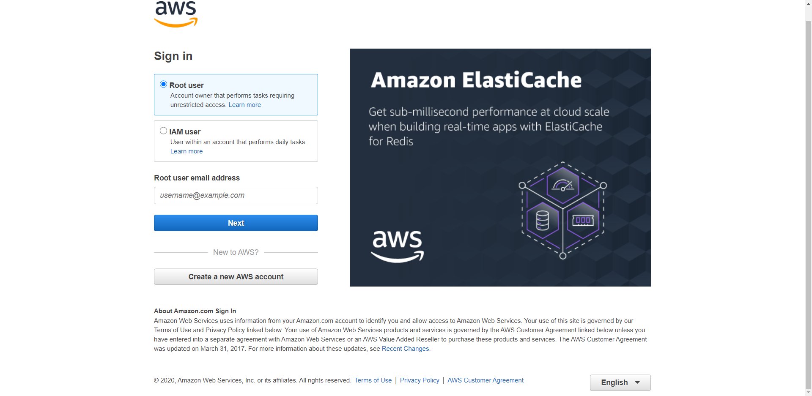

DAY25-如何與人協同工作與好好溝通-設計師篇
DAY25-如何與人協同工作與好好溝通-設計師篇
設計師絕對是我一天當中溝通最多次的人之一。因為前端工程師要將設計師畫好的稿轉換成程式碼，變成能實際運作的頁面，就必須得和設計師大量的溝通，互相確保彼此的理解一致，才不會各做各的，讓成品都沒有達到雙方的要求。
工程師和設計師的差別
例如以製做登入頁面為例，我想的登入頁面是這樣:

而設計師想的登入頁面是這樣:

前端工程師想的登入畫面
前端工程師想的是，要如何建立一個可以交互運作的表單，即時驗證表單輸入要怎麼驗證、輸入錯誤要怎麼辦，輸入正確要怎麼處理資料後跟後端驗證取得token，至於頁面長怎麼樣，只要有個輸入帳號和密碼的地方和登入按鈕就好了，這些一般使用的套件都有提供，直接套上去就好了。
設計師想的登入畫面
設計師想的是，要如何建立一個美又時尚的登入畫面，要有什麼樣的風格同樣要跟公司的品牌精神吻合。要注意字型的運用、按鈕圓角是否夠圓潤等等細節。至於要怎麼要是實現登入功能或是表單的驗證，則不是設計師所在意的事情，就交由前端工程師實現就好了。
工程師和設計師的差別
工程師和設計師的關注點在同一個頁面上就有天差地遠的關注點，工程師關心的是功能如何要有效率的實現，不會過分關注畫面；而設計師關注的是畫面要如何完美的呈現，部會過分關注功能的實現。
如果以安裝水龍頭為比喻:
- 設計師的工作就是設計一個美美的水龍頭，讓水龍頭看起來很吸引人，使用者會特別想要這個水龍頭，使用的感覺很好
- 前端工程師的工作就是按圖製做美美的水龍頭，並將水龍頭安裝在有水的地方，發揮水龍頭應有的功能。
- 後端工程師的工作就是確保水龍頭打開一定有水源可以使用。
設計師常常看到工程師做出水龍頭樣式不對，這邊長了一點、那邊短了一點；這邊顏色不太對、那邊園角不夠圓等等。
而工程師常常看到設計師把水龍頭畫在天花板上，沒有接到水管，整個流程兜不起來，接不到水等等。
這樣的差異顯示角色站在自己的本位一下理解的差異，而沒有建立共通感。要建立共通感就得互相理解，現在來理解一下我觀察到的設計師。
理解設計師
不要預設設計師懂程式
雖然看到很多設計師的職缺要求要懂基本的html和css。但是以筆者經驗來說，就算懂基本的網頁技能，常常還是會有設計稿
例如，曾遇到一個設計稿上面標註的顏色都是CMYK，不是網頁常用的RGB。因此我無法照著他的稿做出來。當然設計師也不是故意找麻煩，而是他原本是印刷業，習慣用的就是CMYK，真的不知道網頁不是使用CMYK
又例如，常常看到設計師在標註按鈕之間的間距的時候，總是有一個奇怪的規則，造成我在寫CSS的時候，總是要加很多奇怪的規則。後來了解了之後才知道原來設計師不知道CSS的盒子模型，沒有外邊距(margin)和內邊距(padding)的概念。後來簡單介紹一下，才了解這個概念，之後就畫出我製作的設計稿
設計師想的大多是如何變得更美
設計師想的就是在滿足功能的要求下如何變得更美，如何展現品牌的個性與區別性。
常常我和設計師合作的時候，看到設計師可以專注在一個字體大小要14px或16px想了一個小時或是給我更新一版設計稿，說改進設計的細節的時候，只是把文字從黑色調成灰色之類的。
站在前端工程師的角度的我，基本上我對這些細節的改進不太有感覺。對我來說，14px和16px的差異真的感受不太強烈，幾乎感覺不出來。但是我可以做到的是，對於設計師的設計展現出充分的尊重，將他們的設計稿一模一樣地製做出來
與設計師溝通的實際例子
例子一:美美的頁面和實用的頁面
工程師常說不要重複造輪子，don’t repeat yourself，因此有各種原則，想辦法重複利用已經建立好的東西。框架有提供優先使用框架提供的功能，若沒有提供才會去想辦法寫。
但是設計師的頁面同樣功能的頁面常有不同的形式表現，例如使用material風格的UI，在某個頁面就會跳脫material風格使用不同風格的樣式，要兼顧美感與功能性的狀況下，無法使用造好的輪子，就要花費工程師大量的時間重新製作，也會失去使用框架要節省時間的意義。
例子二:別人的東西很好，但是我不要和他們一樣
基本上每個框架都會提供一整包已經製做好的icon，像是material風格或是font-awsome等等的icon，只要安裝好之後，引用進來，就可以快速套用，不用去處理任何大小不一致或顯示的問題。
但是設計師有時候會覺得直接使用很像抄襲或是沒有自己的個性，會把框架提供好的icon抓下來做個小調整的修改等等，再請你使用。但是自己修改過後的icon就不是只有引用這麼簡單，要想辦法處理各種相容性和效果的問題，就要花費大量的時間
和設計師溝通
以上兩個例子都是筆者本人實際遇到的例子。我能體會設計師想要展現美感和風格的精神，但是這樣會讓我的工作時程暴漲，因為無法大量重複利用，什麼東西都要我重新來過做起，非常沒有效率。但是基於尊重的精神，很難說出:不好意思做不到等種話。
這些問題曾經困擾了我很久，後來想到溝通的基本精神:相互尊重-我尊重他們的創意，他們也得尊重我是否有辦法有效率實現。
因此和設計師達成共識，我們彼此簡單介紹，相互了解我們在實現功能上的流程，和在意的問題，並且如何在我們在意的問題之間取得平衡點。例如設計師在發想頁面的時候，工程師先提供大致的實行方向和使用元件，讓設計師不會毫無目標的發想，導致之後做不出來；在製做之前也要詳細看過稿，詳細討論覺得功能或流程不合理的地方，等到雙方充分討論覺得沒有問題之後，取得共識再真的下去執行。